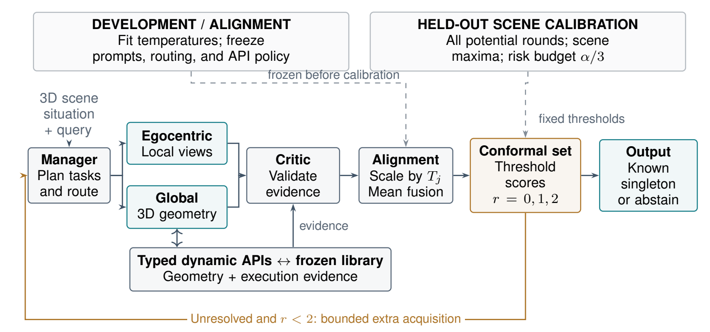
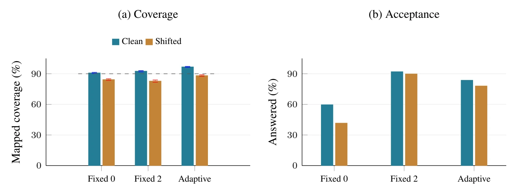

Ground the evidence
Use typed geometry operations, a shared coordinate frame, and stable object IDs. The critic checks what each expert’s evidence actually supports.
vego = RT(vworld − t)
Published at Foundation Models in the Wild
Taming Multi-Agent Collaboration for 3D Situated Reasoning via Uncertainty Alignment
Align uncertainty.
Know when to answer.
The chair is left of the observer. Its stable ID and transformed coordinates support the relation.
Selective accuracy
Among 83.60% answered · clean testFewer extra observations
Adaptive vs. final fixed-round inferenceAccuracy from alignment
Aligned vs. unscaled initial fusionReported synthetic 3D study · five seeds · geometric estimators Understand the evidence
01 / THE QUESTION BEHIND THE QUESTION
A local view can miss an object.
A global view can misjudge its position.
Both can sound equally certain.
Situated reasoning needs a shared coordinate frame and a principled way to reconcile complementary evidence. Tame3D aligns expert scores, then asks a different question: does the evidence support a single answer?
Situated reasoning requires reconciling observations from an agent’s viewpoint with the geometry of an entire scene. Experts with complementary evidence can disagree, while their confidence scores may have incompatible scales. Tame3D coordinates a manager, egocentric and global experts, and an evidence-checking critic. Typed geometric operations provide inspectable evidence, temperature scaling aligns expert scores, and scene-level conformal prediction governs answering, further acquisition, and abstention. An explicit residual category accounts for answers omitted from the candidate set. Under exchangeability and a frozen acquisition policy, the method bounds the probability of any incorrect automatically accepted answer in a new scene. Synthetic 3D experiments characterize the tradeoff between acquisition cost, answer rate, and reliability, together with the limits of calibration under observation shift.
Condensed from the accompanying paper. Read the original abstract ↗
02 / THE METHOD
Inspectable geometry meets
candidate-aware uncertainty.

Use typed geometry operations, a shared coordinate frame, and stable object IDs. The critic checks what each expert’s evidence actually supports.
Fit one temperature per expert on development scenes. Fuse their checked distributions over the same candidates, including the residual label Other.
Calibrate on held-out scene blocks. Answer only when the prediction set contains one ordinary candidate; otherwise acquire evidence or abstain.
Development fixes the predictor and acquisition policy. Calibration completes every potential round; its thresholds decide only when to stop.
03 / FOLLOW THE DECISION
Explore three constructed examples.
No model calls. No invented performance.
When the prediction set contains only “chair”, the controller accepts it. A non-residual singleton is the only automatic answering condition.
PREDICTION SET Γ
One ordinary label. No unresolved residual category.
Candidate sets are illustrative, not recorded predictions. Other represents an answer missing from the candidate list; it is never returned as an answer. Empty sets also trigger acquisition or abstention.
04 / THE RELIABILITY–COST TRADEOFF
Reported synthetic 3D results.
Five seeds. One question per scene.
Original observation model; temperatures and thresholds fitted on separate development and calibration scenes.
Coverage marker: nominal 90% target under exchangeability. Selective accuracy has a different denominator.
EXTRA ACQUISITIONS
per question, beyond the initial observation
extra acquisitions than Fixed (2), with a lower answer rate.
Each acquisition gives both experts one additional observation. This is not a latency or token measurement.
Adaptive inference uses α/3 per round; each fixed rule uses α at one round. This comparison changes both stopping and risk allocation.
| Method | Forced acc. (%) | Mapped cov. (%) | Set size | Answered (%) | Selective acc. (%) | Joint error (%) | Extra acq. |
|---|---|---|---|---|---|---|---|
| Egocentric | 68.8 ± 1.0 | 68.8 ± 1.0 | 1.00 ± 0.00 | 100.0 ± 0.0 | 68.8 ± 1.0 | 31.20 ± 1.00 | 0.00 ± 0.00 |
| Global | 72.3 ± 0.9 | 72.3 ± 0.9 | 1.00 ± 0.00 | 100.0 ± 0.0 | 72.3 ± 0.9 | 27.70 ± 0.86 | 0.00 ± 0.00 |
| Unscaled fusion | 72.8 ± 0.9 | 72.8 ± 0.9 | 1.00 ± 0.00 | 100.0 ± 0.0 | 72.8 ± 0.9 | 27.20 ± 0.93 | 0.00 ± 0.00 |
| Aligned fusion | 74.8 ± 0.9 | 74.8 ± 0.9 | 1.00 ± 0.00 | 100.0 ± 0.0 | 74.8 ± 0.9 | 25.20 ± 0.91 | 0.00 ± 0.00 |
| Fixed (0) | 74.8 ± 0.9 | 90.8 ± 0.6 | 1.50 ± 0.03 | 59.6 ± 1.6 | 93.5 ± 0.6 | 3.88 ± 0.23 | 0.00 ± 0.00 |
| Fixed (2) | 89.6 ± 0.8 | 92.5 ± 0.6 | 1.11 ± 0.03 | 92.0 ± 1.0 | 95.3 ± 0.4 | 4.34 ± 0.36 | 2.00 ± 0.00 |
| Adaptive | 87.1 ± 1.0 | 96.7 ± 0.5 | 1.22 ± 0.03 | 83.6 ± 1.7 | 97.4 ± 0.5 | 2.18 ± 0.33 | 1.06 ± 0.04 |
| Method | Forced acc. (%) | Mapped cov. (%) | Set size | Answered (%) | Selective acc. (%) | Joint error (%) | Extra acq. |
|---|---|---|---|---|---|---|---|
| Aligned fusion | 60.6 ± 1.2 | 60.6 ± 1.2 | 1.00 ± 0.00 | 100.0 ± 0.0 | 60.6 ± 1.2 | 39.40 ± 1.20 | 0.00 ± 0.00 |
| Fixed (0) | 60.6 ± 1.2 | 84.2 ± 0.8 | 1.79 ± 0.04 | 41.6 ± 1.8 | 79.4 ± 0.8 | 8.54 ± 0.05 | 0.00 ± 0.00 |
| Fixed (2) | 80.0 ± 1.0 | 82.8 ± 1.1 | 1.01 ± 0.02 | 89.8 ± 1.4 | 83.1 ± 0.9 | 15.16 ± 0.57 | 2.00 ± 0.00 |
| Adaptive | 76.6 ± 1.1 | 88.2 ± 0.8 | 1.34 ± 0.03 | 78.0 ± 1.5 | 85.9 ± 0.7 | 11.00 ± 0.37 | 1.39 ± 0.04 |
WHAT ALIGNMENT CHANGES
Forced accuracy (%) · common 0–100 scale · initial observation. Alignment adds 2.00 percentage points over unscaled fusion.
WHEN OBSERVATIONS SHIFT
Adaptive mapped-label coverage drops 8.54 percentage points when observations become sparser and noisier, while clean-data calibration stays fixed.

Original Figure 2 · error bars show one sample SD. PDF page 7 ↗
05 / EVIDENCE, WITH ITS BOUNDARIES
The controller’s decisions are calibrated.
Its claims should be just as precise.
Synthetic scenes with 12 object centroids and four categories. Tasks ask for a category count, a relative direction, or the nearest object’s category. The experiments use two geometric estimators with incomplete, noisy observations, known object categories and known observer translation.
Five seeds: 17, 29, 43, 71, 101. Each has 400 development, 600 calibration, 1,000 clean-test and 1,000 shifted-test scenes. There is one question per scene. These are not SQA3D benchmark results or a complete foundation-model evaluation.
Each metric is calculated separately for each seed, then summarized by its arithmetic mean and sample standard deviation. The ± values are not confidence intervals. Joint error is wrong-and-answered divided by all questions; selective accuracy uses only answered questions. Their denominators are intentionally different.
Derived gains use unrounded means. In particular, 46.80% acquisition savings uses the underlying counts before the displayed 1.06 mean is rounded. Mapped-label coverage includes Other and does not imply that the missing answer string was recovered.
With exchangeable scene blocks and a predictor and acquisition policy frozen before calibration, the probability of at least one wrong automatically accepted answer in a new scene is at most α. Scene maxima handle correlated questions; a union bound handles the prespecified rounds.
This is a marginal scene-level guarantee. It does not promise 1 − α accuracy conditional on answering. Model, prompt, policy or observation shifts can invalidate it. The experiment uses α = 0.10 and one question per scene; it does not test the conservatism of many-question scene maxima.
Adaptive inference saves additional observations while answering fewer questions than Fixed (2): 83.60% versus 92.00%, with selective accuracy 97.39% versus 95.28%. Both early stopping and stricter per-round risk allocation contribute. It is not a matched-answer-rate ablation of early stopping.
The study does not measure model latency, tokens, learned perception, an LLM critic, or program-cache speedups.
Each estimator’s object-retention probability decreases by 0.20; position-noise standard deviations are multiplied by 1.7 and yaw-noise standard deviations by 2.5. Estimators use the shifted noise scales for predictive draws, while temperatures and conformal thresholds remain those fitted on clean data.
All displayed experimental values follow the accompanying PDF and per-seed aggregate summaries retained by the authors. The paper describes the method and results; the public page provides summary statistics, not manuscript source files or raw per-seed counts.
The source mapping explains how the displayed statistics relate to the manuscript. The linked code is a separate research implementation. Local consistency checks verify the aggregate presentation, not a rerun of the experiment.
06 / TAKE A CLOSER LOOK
Open the details.
Trace every reported number.
Method, theory, experiments
and appendices.
Research implementation
and reproduction documentation.
Computed means, sample SDs,
definitions and study context.
CITE THIS WORK
@inproceedings{qiang2025tame3d,
title={Taming Multi-Agent Collaboration for 3D Situated Reasoning via Uncertainty Alignment},
author={Qiang, Yirong and Hong, Xi and Li, Zhewei and Zheng, Yuling and Lu, Yi and Chen, Yilun},
booktitle={ICLR 2025 Workshop on Foundation Models in the Wild},
year={2025},
url={https://apromisedland.github.io/tame3d-paper-page/}
}